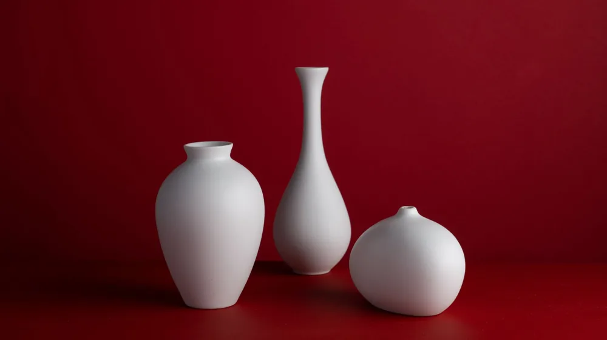

달항아리 인테리어, 우아함을 담는 3단계 예약 가이드
사진: HIEU NGUYEN / Pexels (무료 이미지, 출처 표기)
달항아리 인테리어, 우아함을 담는 3단계 예약 가이드

달항아리 인테리어는 고요하면서도 깊이 있는 아름다움으로 많은 분들의 시선을 사로잡습니다. 하지만 막상 내 공간에 어떻게 들여야 할지 막막하게 느끼는 경우가 많습니다. 전문가의 도움을 받아 달항아리 인테리어를 성공적으로 ‘예약’하고, 만족스러운 결과물을 얻기 위한 실질적인 가이드를 찾고 계셨다면 이 글이 도움이 될 것입니다.
이 글에서는 달항아리 인테리어의 분위기 연출부터 전문가 선택, 비용 절감 팁, 그리고 실패 없는 공간 연출을 위한 체크리스트까지 상세히 알려드립니다. 2026년 10월 기준으로 최신 정보와 함께 달항아리의 매력을 공간에 완벽하게 담아낼 수 있도록 돕겠습니다.
달항아리 인테리어, 어떤 분위기를 연출할까?
달항아리는 조선 시대부터 전해 내려오는 백자 항아리로, 그 은은하고 절제된 아름다움이 특징입니다. ‘달’이라는 이름처럼 둥글고 푸근한 형태는 보는 이에게 안정감과 평온함을 선사합니다. 인테리어에 달항아리를 활용하면 정갈하면서도 동양적인 미니멀리즘을 구현할 수 있습니다.
특히 '여백의 미(美)'를 중요시하는 공간에서 달항아리는 그 자체로 강력한 존재감을 드러내며 중심 오브제 역할을 합니다. 현대적인 거실이나 서재, 침실은 물론 카페나 갤러리 같은 상업 공간에서도 고유의 품격을 더해주는 아이템으로 활용됩니다. 빛과 그림자에 따라 시시각각 변하는 곡선의 아름다움은 공간에 생동감을 불어넣습니다.
나에게 맞는 달항아리 인테리어 서비스 선택 가이드
달항아리 인테리어를 계획할 때 가장 중요한 단계는 나에게 맞는 전문가 또는 서비스를 선택하는 것입니다. '예약'이라는 표현은 단순히 물건을 사는 것을 넘어, 전문가의 지식과 경험을 빌려 공간을 완성하는 과정을 의미합니다. 다음과 같은 방법들을 고려해 볼 수 있습니다.
- 전문 인테리어 디자이너 상담: 공간 전체의 컨셉부터 달항아리 선정, 다른 가구 및 소품과의 조화까지 전반적인 디자인을 맡길 수 있습니다. 비용은 높지만, 완성도 높은 결과물을 기대할 수 있습니다. 달항아리 인테리어 경험이 있는 디자이너를 선택하는 것이 중요합니다.
- 도예 갤러리/아트샵 컨설팅: 달항아리를 전문적으로 취급하는 갤러리나 아트샵에서는 작품 구매와 함께 공간 배치에 대한 기본적인 조언을 얻을 수 있습니다. 특정 작가의 작품을 중심으로 인테리어를 구성하고 싶을 때 유용합니다.
- 홈 스타일링 서비스 활용: 인테리어 디자이너보다 부담이 적은 선에서 기존 가구에 달항아리를 포함한 소품을 활용해 공간의 분위기를 바꾸는 데 중점을 둡니다. 비교적 합리적인 비용으로 전문가의 감각을 빌릴 수 있습니다.
- 셀프 인테리어 및 전문가 자문: 직접 달항아리를 구매하고 배치하며 셀프 인테리어를 진행하되, 중요한 결정 시에만 전문가에게 부분적인 자문을 구하는 방법입니다. 가장 비용 효율적이지만, 본인의 안목과 실행력이 중요합니다.
어떤 방법을 선택하든, 사전에 충분한 상담을 통해 원하는 분위기, 예산, 달항아리의 종류 등을 명확히 전달하는 것이 성공적인 인테리어의 첫걸음입니다.
달항아리 선정부터 배치까지: 고려할 점
달항아리 인테리어는 단순한 소품 배치를 넘어, 공간과의 조화를 깊이 있게 고려해야 합니다. 다음 체크리스트를 통해 성공적인 연출을 준비해 보세요.
특히 달항아리의 진위성 확인은 중요합니다. 한국공예디자인문화진흥원(KCDF) 등 전문 기관에서는 달항아리 구입 시 제작 기법과 작가 정보를 꼼꼼히 확인할 것을 권장합니다. 개인의 예산과 취향에 따라 현대적으로 재해석된 달항아리 형태의 오브제도 좋은 대안이 될 수 있습니다.
달항아리 인테리어 비용과 절감 팁
달항아리 인테리어는 작품의 가치와 서비스 범위에 따라 비용이 크게 달라질 수 있습니다. 2026년 10월 기준으로, 숙련된 도예가의 작품은 수백에서 수천만 원을 호가할 수 있으며, 인테리어 디자이너의 서비스 비용은 공간의 규모와 디자인 난이도에 따라 유동적입니다.
비용 절감 팁:
- 단계별 접근: 처음부터 고가의 작품이나 전체 인테리어를 의뢰하기보다, 작은 달항아리 오브제나 미니멀한 홈 스타일링으로 시작하여 점차 확장하는 것을 고려해 보세요.
- 신진 작가 발굴: 유명 작가의 작품 대신 실력 있는 신진 작가들의 작품에 투자하면 비교적 합리적인 가격으로 개성 있는 달항아리를 만날 수 있습니다.
- 빈티지/중고 마켓 활용: 뜻밖의 장소에서 숨겨진 보물을 찾듯, 빈티지 도자기 마켓이나 중고 거래 플랫폼을 통해 상태 좋은 달항아리를 저렴하게 구매할 수도 있습니다.
- 렌탈 서비스 이용: 특정 기간 동안 달항아리 연출이 필요하다면(예: 행사, 전시), 작품 렌탈 서비스를 이용하는 것이 구매보다 경제적일 수 있습니다.
- 직접 구매 및 셀프 배치: 인테리어 컨설팅만 받고, 달항아리 구매와 배치는 직접 진행하여 디자이너의 인건비를 절감하는 방법도 있습니다.
어떤 방법이든 예산을 미리 정하고 전문가와 충분히 상의하여 불필요한 지출을 줄이는 것이 중요합니다. 정확한 비용은 서비스 제공 업체나 작가에게 직접 문의하여 견적을 받아보시길 권장합니다.
실패 없는 달항아리 인테리어를 위한 체크리스트
달항아리 인테리어는 섬세한 접근이 필요한 분야입니다. 마지막으로, 성공적인 공간 연출을 위해 반드시 확인해야 할 사항들을 정리했습니다.
- 개념 명확화: 어떤 분위기(전통, 현대, 퓨전)를 연출하고 싶은지 구체적인 레퍼런스를 통해 전문가에게 전달합니다.
- 예산 설정: 달항아리 구매 비용, 디자인 서비스 비용 등 총예산을 현실적으로 설정하고 공유합니다.
- 전문가 상담: 달항아리 인테리어 경험이 풍부한 디자이너 또는 갤러리 전문가와 충분히 상담하여 조언을 구합니다.
- 작품 선정 신중: 달항아리의 크기, 형태, 재질, 색상 등이 공간과 조화를 이루는지 여러 각도에서 검토합니다.
- 공간 배치 고려: 달항아리가 놓일 위치의 빛, 여백, 주변 가구와의 균형을 면밀히 살핍니다. 과유불급(過猶不及)의 원칙을 기억하세요.
- 안전 확보: 깨지기 쉬운 도자기이므로, 아이나 반려동물이 없는 안전한 위치에 견고하게 배치합니다.
달항아리 인테리어는 단순히 물건을 놓는 것을 넘어, 공간에 ‘정신’을 불어넣는 작업입니다. 이 가이드를 통해 당신의 공간에 달항아리의 고요하고 깊이 있는 아름다움을 성공적으로 담아내시길 바랍니다. 궁금한 점은 언제든 전문가에게 다시 한번 확인하는 것을 잊지 마세요.
🔗 이 글도 함께 보면 좋아요: 소반을 커피테이블로: 좁은 공간도 넓게 쓰는 감성 인테리어 팁
관련 추천 상품
달항아리, 도자기 인테리어, 백자 오브제 관련 인기 상품 보러가기
이 포스팅은 쿠팡 파트너스 활동의 일환으로, 이에 따른 일정액의 수수료를 제공받습니다.